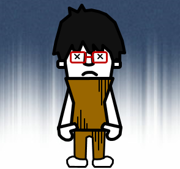

<ons-page ng-controller="failureCtrl as ctrl">
    <ons-toolbar>
        <div class="center">Mission失敗</div>
    </ons-toolbar>
    <p>{{ctrl.title}}</p>
    
    <br />
    <ons-row>
        <ons-col style="margin:10px;">
            <ons-button modifier="large" ng-click="ctrl.closeMission();">
            オワリ
            </ons-button>
        </ons-col>
    </ons-row>
</ons-page>